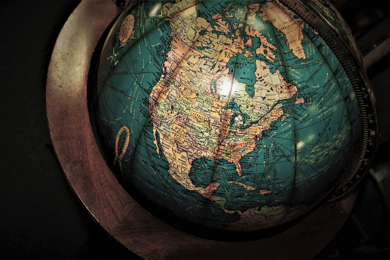

Provide text alternatives for any non-text content so that it can be changed into other forms people need, such as large print, braille, speech, symbols or simpler language.
Source: WorldWideWeb Consortium Web Accessibility Initiative
Here is a photograph of an old globe. Are you finding any useful information in it? What if you closed your eyes? How do you think you could navigate a website without actually looking at it? Have you ever learned about screen readers?
Credit: Image source pexels